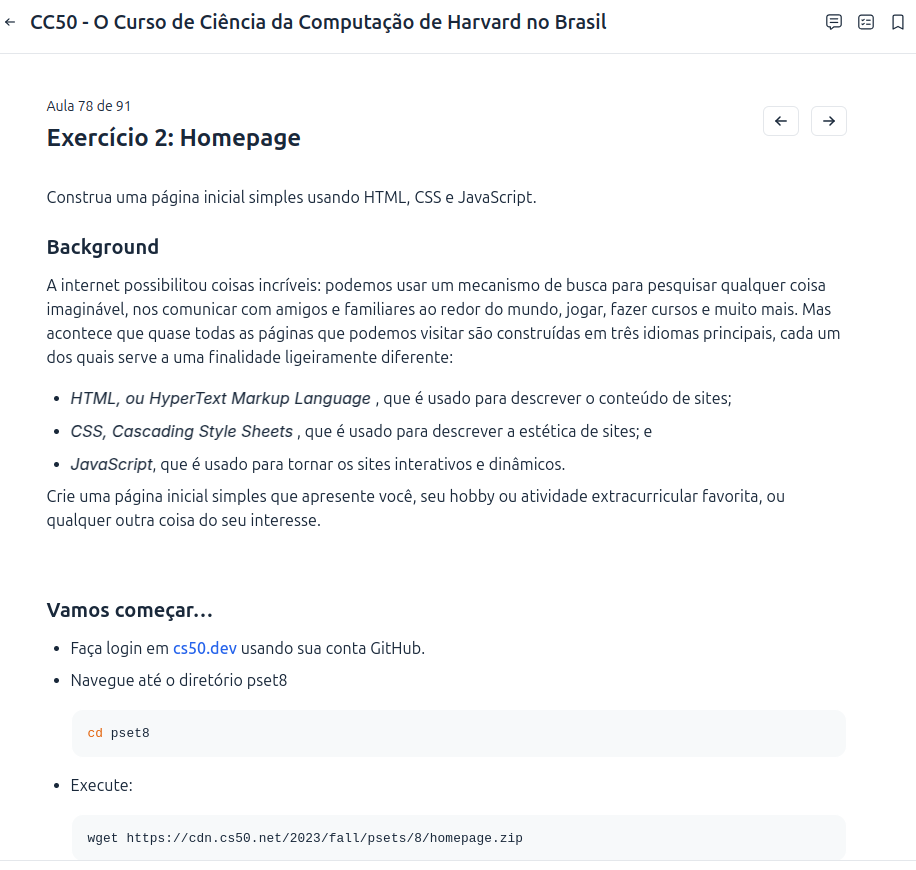

Sobre o Site
Este site foi criado para compartilhar conteúdos sobre tecnologia, programação e segurança digital. Uma atividade do curso cc50.

Tecnologias Utilizadas
- HTML, CSS e Bootstrap para o design
- JavaScript para interatividade
- Recursos externos como fontes, ícones e APIs